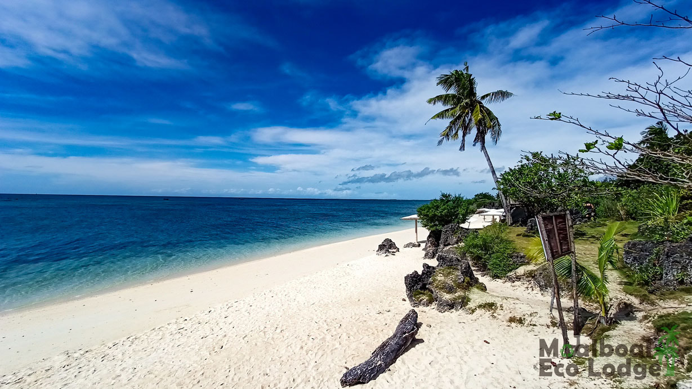

Aside from being a beach destination, Bantayan Island is also a fishing community. It plays Cebu's fishing grounds, supplying fresh catch to towns and provinces as far as Manila and Mindanao. They’re famous for their danggit (dried fish). Because of this, you’ll be sure to fill your days with food tours feasting on the freshest seafood dishes for a lower price during your trip to Bantayan Island.
Idyllic beach trips, island-hopping, exciting water activities, and inland tours, to gastronomic seafood adventures await you in Bantayan Island. Use this ultimate travel guide to plan your trip to this paradise in Cebu.

Menu
Click the image to view a larger version